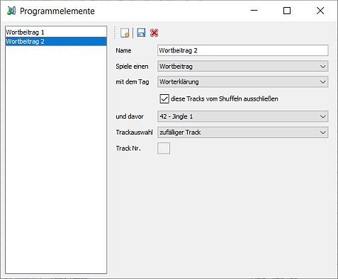
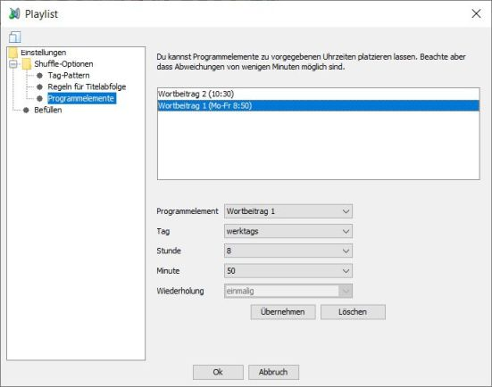

Programmelemente für Playlists

Was ist das?
Programmelemente können zu festgelegten Uhrzeiten in Playlists eingefügt werden die auf dem Server mit dem Station Admin-Verfahren geshuffelt werden.
Das können z. B. Wortbeiträge sein die täglich zu festen Zeiten laufen sollen oder auch Songs die etwa immer zur vollen Stunden laufen sollen.
Programmelemente erstellen
Unter
Ein Programmelement wird über folgende Eigenschaften konfiguriert:
- : Eindeutiger Name mit dem Du das Programmelement innerhalb der Playlistkonfiguration auffinden kannst.
- : Hier legst Du fest ob ein Song, ein Jingle oder ein Moderationsbeitrag gespielt werden soll.
- : Hier legst Du das Tag fest anhand dessen die verfügbaren Tracks ausgewählt werden.
- : Wenn diese Option ausgewählt ist werden die verfügbaren Tracks nicht im Rahmen des normelen Shuffelns anderswo innerhalb der Playlist platziert.
- : Hier legst Du optional ein Jingle fest das vor dem ausgewählten Track gespielt werden soll
- : Hier legst Du fest wie der Track der dann letztlich gespielt wird ausgewählt werden soll. Dazu im nächsten Abschnitt mehr.
- : Nur bei der Option "festgelegter Track" für die Trackauswahl kannst Du hier festlegen welcher Track gespielt werden soll.
Für die Trackauswahl stehen Dir folgende Möglichkeiten zur Verfügung:
- zufälliger Track: Wie der Name schon sagt - es wird ein zufälliger Track ausgewählt.
- rotiere über Liste: Es wird derjenige Track ausgewählt der dem zuletzt gespielten in der Playlist folgt. Wichtig: Das funktioniert nur wenn täglich ein Track gespielt wird. Ansonsten wird wieder der erste Track verwendet.
- wähle täglich einen anderen Track: Es wird täglich ein anderer Track verwendet. Das funktioniert auch dann wenn nicht täglich ein Track gespielt wird. Es werden jedoch nicht zwangsläufig alle Tracks aus der Liste nacheinander gespielt. Wurden etwa Montag bis Freitag die Tracks 1 bis 5 gespielt und am Wochenende keiner geht es am folgenden Montag mit Track 8 weiter. Auch kann es zu Sprüngen kommen wenn die Zahl der Tracks in der Playlist verändert wird.
- Track enthält Datum: Wählt den ersten Track aus der das aktuelle Datum im Format TT.MM. enthält. Gibt es keinen passenden Track wird nichts gespielt.
- festgelegter Track: Lege über Track-Nr. selber fest welcher Track gespielt wird.
Programmelemente verwenden

Innerhalb von Playlists die auf dem Server mit dem Station Admin-Verfahren geshuffelt werden kannst Du die Programmelemente nun verwenden. Im Bereich kannst Du Programmelemente zur Verwendung konfigurieren oder Einträge löschen oder bearbeiten.
Um ein Programmelement zu platzieren musst Du folgendes angeben:
- : Hier wählst Du das Programmelement aus das platziert werden soll.
- : Hier legst Du fest an welchen Wochentagen das Programmelement gespielt werden soll.
- : Hier wählst Du entweder die Stunde aus in der das Programmelement gespielt werden soll oder um das Programmelement mehrfach zu wiederholen.
- : Hier legst Du die Minute innerhalb der Stunde fest.
- : Wenn das Programmelement regelmäßig gespielt werden soll legst Du hier fest in welchem Abstand eine Wiederholung erfolgt.
Grundsätzlich gibt es also zwei Ansätze: Entweder ein Programmelement wird zu einer festgelegten Uhrzeit gespielt. Dann solltest Du natürlich darauf achten dass die Playlist auch zu der betreffenden Zeit im Sendeplan steht. Oder das Programmelement wird stündlich oder alle x Stunden immer zu einer festen Zeit innerhalb der Stunde wiederholt.
Beachte bitte das alle die Platzierung nur ungefähr zur festgelegten Zeit erfolgt. Eine garantierte Platzierung auf die Minute genau ist technisch nicht möglich.